Documentation
Priority Scoring — RICE, WSJF & ICE for Jira · Complete Setup & User Guide
Contents
1. Overview
Priority Scoring brings structured, data-driven prioritization to your Jira backlog. Instead of gut-feel ordering, your team picks a scoring framework, enters a few dimension values per issue, and the app calculates a comparable priority score across your entire backlog.
Three industry-standard frameworks are supported — choose the one that fits your team's workflow, or mix and match across different projects:
| Framework | Formula | Best for |
|---|---|---|
| RICE | (Reach × Impact × Confidence) ÷ Effort |
Product teams, user-facing features, roadmap planning |
| WSJF | (Business Value + Time Criticality + Risk Reduction) ÷ Job Size |
SAFe teams, enterprise delivery, compliance-driven work |
| ICE | Impact × Confidence × Ease |
Growth teams, experiments, fast iteration cycles |
Beyond individual scores, the app provides:
- Board Health Score (0–100) — a real-time quality signal for your backlog, configurable per project and team type.
- Priority Ranking — a sorted list of all scored issues so you always know what to tackle next.
- Portfolio View — health at a glance across all your Jira projects in one table.
- Rovo AI Agent — ask Rovo to suggest, apply, or bulk-score issues using natural language.
- Score Audit Trail — a per-issue history of every score change, including who set it and whether it was via Rovo.
2. Installation
Install from the Atlassian Marketplace
- Go to the Atlassian Marketplace and search for Priority Scoring.
- Click Get it now (or Try it free to start a trial).
- Select your Jira Cloud site and confirm the installation.
- Once installed, open Jira and click Apps in the top navigation — you should see Priority Scoring in the dropdown.
Here's a birds-eye view of the complete setup flow before we go step by step:
3. Step 1 — Create Custom Fields
After installation, the app's scoring field types become available in Jira's field library — but they don't appear on issues automatically. You need to create a custom field for each framework you want to use (RICE, WSJF, and/or ICE) and then assign them to your project screens.
This section covers creating the fields. Step 2 covers assigning them to screens.
How to Create a Priority Scoring Field
- In Jira, click the gear icon (top right) to open Jira Settings.
- In the left sidebar, navigate to Work items (or Issues in classic Jira) → Fields.
- Click Create new field in the top right corner.
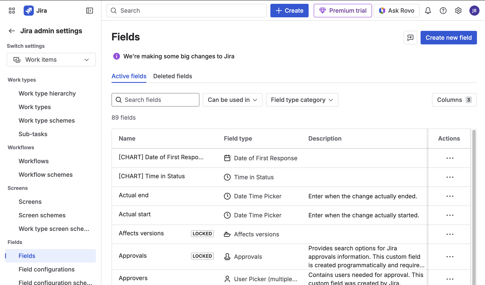
Selecting the Field Type
- In the Create field dialog, type
prioorpriority scoringin the search box. - You will see the available field types from the app:
- Priority Scoring — RICE
- Priority Scoring — WSJF
- Priority Scoring — ICE
- Select the framework you want (e.g. Priority Scoring — RICE) and click Next.
- Give the field a name — the default name (e.g. "Priority Scoring — RICE") is recommended so the app and your team can identify it clearly.
- Click Create.
- Repeat for each additional framework you want to use (WSJF, ICE).
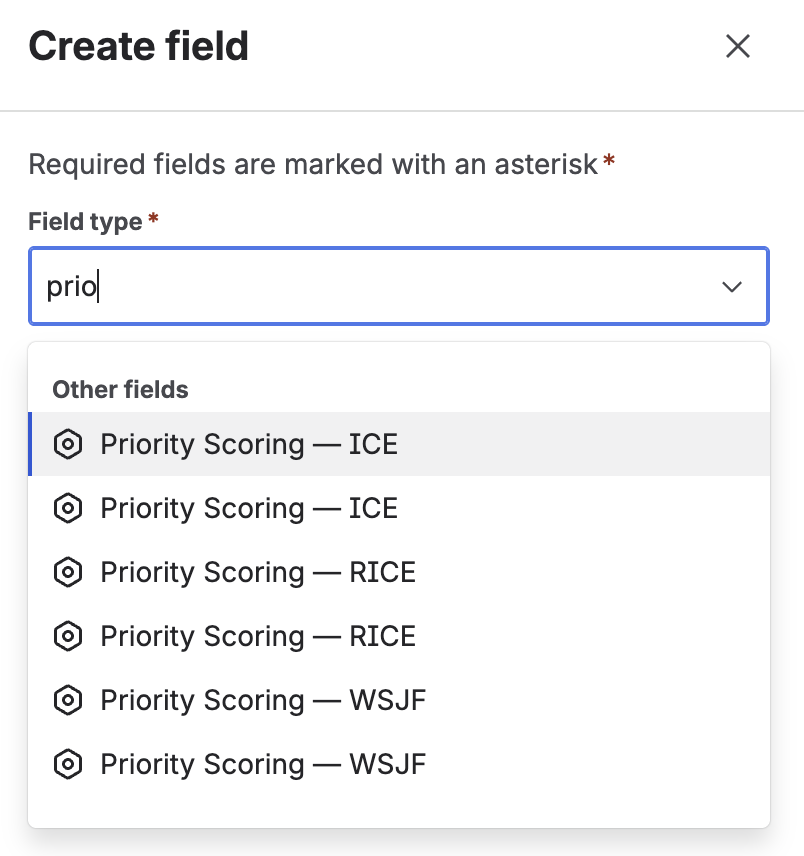
4. Step 2 — Add Fields to Issue Screens
Jira uses screens to control which fields are visible on an issue. After creating your Priority Scoring fields, you need to add them to the screen(s) used by your projects. This is a one-time setup step per project.
How to Add a Field to a Screen
- Go to Jira Settings → Work items → Screens.
- Find the screen used by your project. For a Kanban project this is typically the "[Project Name] Kanban Default Issue Screen"; for Scrum it is usually the "[Project Name] Scrum Default Issue Screen".
- Click the screen name to open its field configuration.
- At the bottom of the field list, use the Select Field… dropdown to find "Priority Scoring — RICE" (or WSJF / ICE).
- Click Add. The field now appears on every issue in that project.
- Repeat for each framework field you created.
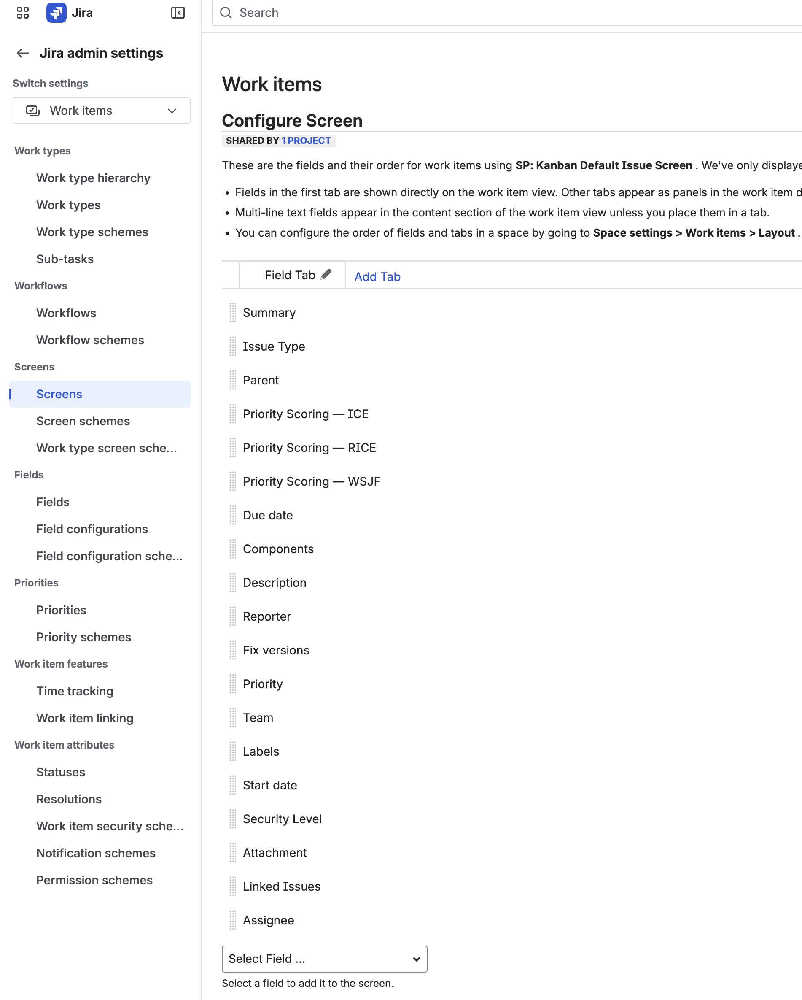
5. Scoring an Issue
With the setup complete, open any Jira issue in your project. You will see the Priority Scoring fields in the issue details panel — one per framework you added. Each field shows a color-coded score bar and a set of dimension sliders.
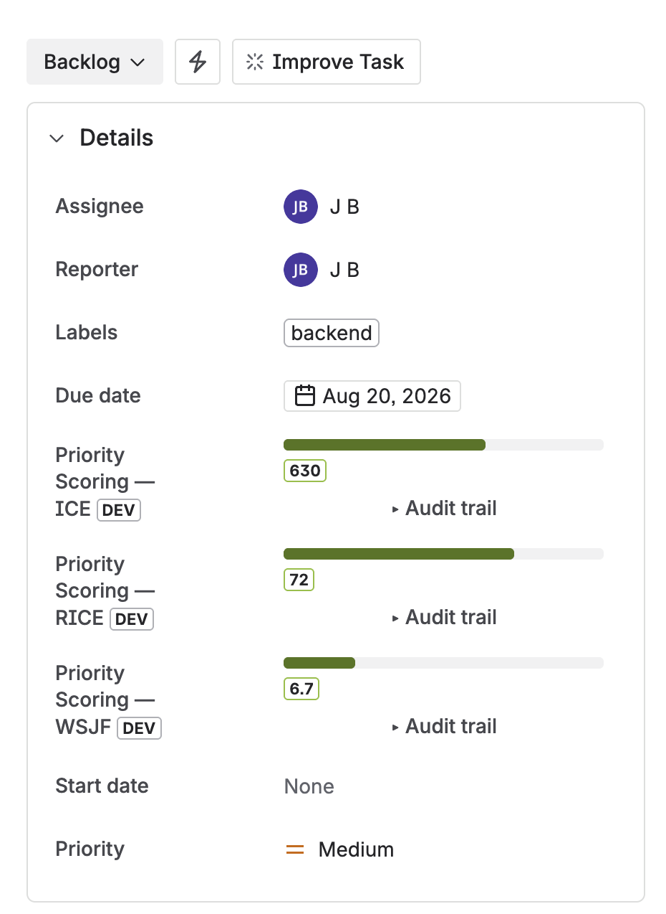
Setting Dimension Values
Click on a Priority Scoring field to expand it. You will see individual sliders for each dimension:
- RICE: Reach, Impact, Confidence, Effort
- WSJF: Business Value, Time Criticality, Risk Reduction, Job Size
- ICE: Impact, Confidence, Ease
Drag each slider to the appropriate value. The score is calculated live and shown above the sliders. Click the checkmark ✓ to save, or × to cancel.
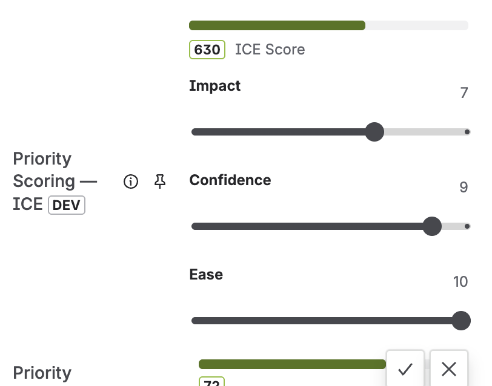
Rovo Suggest Panel
When viewing an issue, Rovo can suggest scores directly in the side panel — showing its reasoning for each dimension before you decide whether to apply the values. This is especially useful for understanding why an issue scores the way it does.
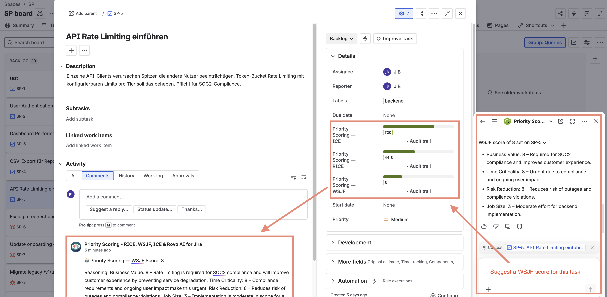
6. The Dashboard
Open Priority Scoring from the Apps menu in Jira's top navigation bar. The app has five tabs: Dashboard, Activity, Portfolio, Settings, and Import.
The Dashboard tab is your command center. Select a project and scoring framework from the dropdowns at the top, and the dashboard shows two things simultaneously:
- Board Health — a 0–100 health score with a breakdown of quality signals across your backlog.
- Priority Ranking — all scored issues sorted by score descending, so you can see the full prioritized backlog at a glance.
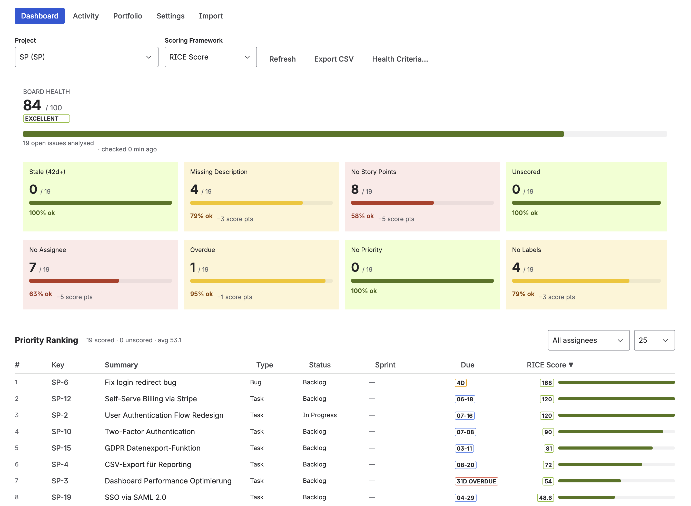
Priority Ranking Table
The ranking table shows every scored issue in your project, sorted by score. Each row includes the issue key, summary, type, status, sprint, due date, and score bar. Use the All assignees dropdown to filter by team member, and the page-size selector to show 25, 50, or 100 issues at a time.
Click Export CSV in the toolbar to download the full ranking as a spreadsheet — useful for stakeholder reports or sprint planning sessions.
Refreshing Data
The Board Health score is cached for up to 1 hour to keep performance fast. When you set scores via the sliders or via Rovo, the cache is invalidated automatically and the health score updates immediately. Click Refresh in the toolbar to manually trigger a reload.
7. Board Health
The Board Health score (labeled "Board Health" in the app, not "Backlog Health") analyses all open issues in a project — including In Progress, not just the backlog — and calculates a quality score from 0 to 100. A score of 84 means 84% of your issues meet the quality standards you've configured.
Each health criterion tile shows:
- How many issues are affected (e.g. 4/19 missing a description)
- The percentage that are OK (e.g. 79% ok)
- How many score points this criterion is currently subtracting from your health score (e.g. −3 score pts)
This "−N score pts" view helps you prioritize which issues to fix first — tackle the criterion with the highest penalty first for the biggest health improvement.
Configure Health Criteria per Project
Every project has different needs. A Scrum team cares deeply about Story Points and Due Dates; a Kanban team cares more about Assignees and Labels. Priority Scoring lets you configure exactly which criteria count toward the health score, per project.
Click Health Criteria… in the dashboard toolbar to open the configuration dialog.
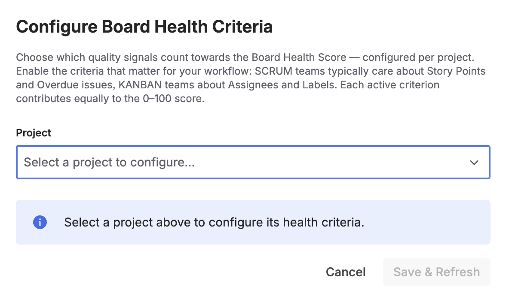
Select a project from the dropdown, and the full list of 8 configurable criteria appears, with Quick Presets for SCRUM and KANBAN teams:
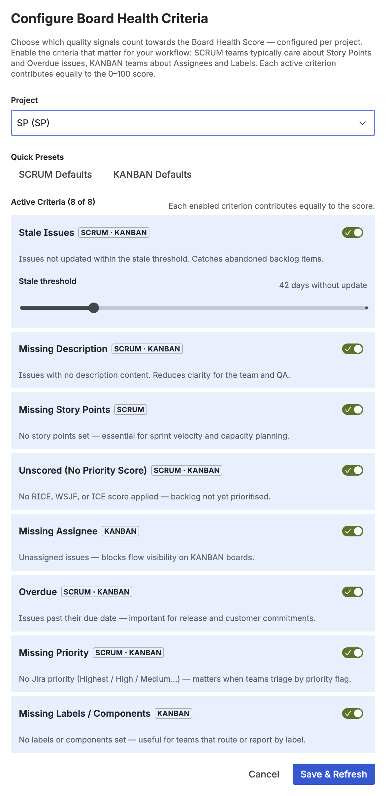
| Criterion | What it checks | Default | Recommended for |
|---|---|---|---|
| Stale Issues | Issues not updated within the stale threshold (configurable 7–180 days, default 60) | On | Scrum & Kanban |
| Missing Description | Issues with no description content | On | Scrum & Kanban |
| Missing Story Points | No story points set on the issue | On | Scrum only |
| Unscored | No RICE, WSJF, or ICE score applied yet | On | Scrum & Kanban |
| Missing Assignee | Issue has no assignee set | Off | Kanban |
| Overdue | Issue has a due date that is in the past | Off | Scrum & Kanban |
| Missing Priority | Jira's built-in Priority field is empty or "None" | Off | Scrum & Kanban |
| Missing Labels / Components | Neither labels nor components are set on the issue | Off | Kanban |
Each enabled criterion contributes equally to the score penalty. With 4 criteria active, each can subtract up to 25 points. With 6 criteria, each can subtract up to ~16.7 points. The score range is always 0–100 regardless of how many criteria are enabled.
Click Save & Refresh to apply your configuration. The health score recalculates immediately.
8. Rovo AI Agent
Priority Scoring ships with a built-in Rovo Agent that understands your scoring frameworks and can suggest, apply, explain, and bulk-score issues directly from a Rovo chat conversation — no manual slider work required.
How to Activate the Agent
Open Rovo from the Atlassian navigation bar (the "Ask Rovo" button). In the chat, click the agent selector and search for Priority Scoring.
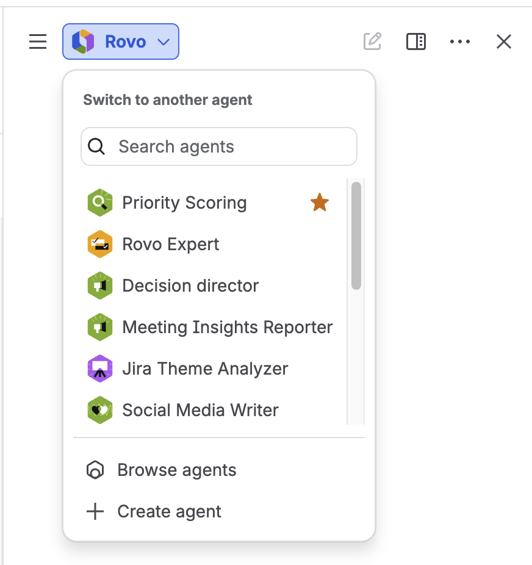
Once selected, you can address the agent in plain English. The agent understands all three frameworks and reads the Rovo Apply Mode setting you configure in the Settings tab.
Rovo Agent Capabilities
| What you can ask | What the agent does | Mode required |
|---|---|---|
| "Suggest a RICE score for PROJ-123" | Analyses the issue and provides recommended dimension values with written reasoning — does not write to Jira | Suggest, Confirm, or Auto |
| "Apply a WSJF score to PROJ-42" | Calculates and writes the score directly to the issue's Priority Scoring field | Confirm or Auto |
| "Score all unscored tasks in project SP" | Finds unscored issues, calculates scores in bulk, and applies them — up to the configured bulk limit per run | Confirm or Auto |
| "Explain the score for PROJ-55" | Reads the saved dimension values and explains why each dimension was set to its value | Any |
| "Find unscored issues in project PROJ" | Returns a list of issues that have no Priority Score set yet | Any |
| "What is the board health for project SP?" | Returns the current Board Health score and a summary of the main issues dragging it down | Any |
| "Migrate my RICE scores from our old app to project SP" | Scans for existing RICE/WSJF/ICE fields from other apps and imports the values | Confirm or Auto |
Bulk Scoring in Action
Bulk scoring is one of the most powerful Rovo features — you can score an entire backlog of unscored issues with a single prompt. Rovo will ask you to confirm the tool use, then process all unscored issues up to the bulk limit.
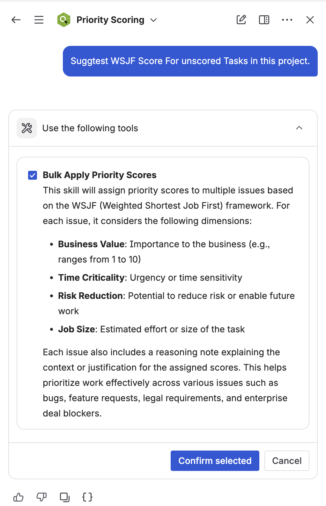
After confirmation, Rovo processes the issues and returns a summary of all applied scores:
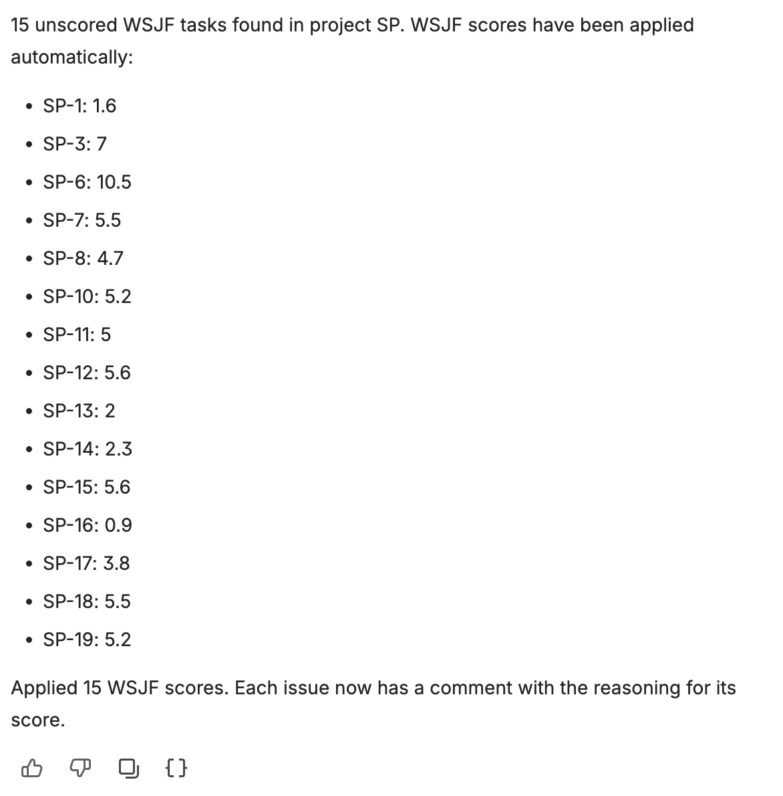
Rovo Issue Comments
When the "Write Rovo reasoning to issue comments" option is enabled in Settings, Rovo adds a comment to the issue every time it applies a score — explaining the reasoning behind each dimension value in plain language.
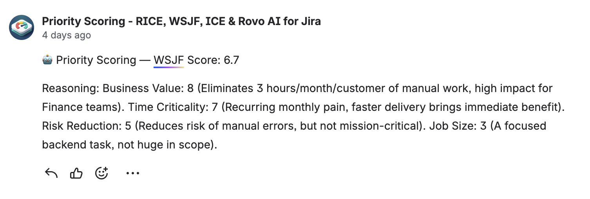
These comments are especially useful for async teams and stakeholders who want to understand why an issue was prioritized without opening a Rovo chat.
Apply Modes — How Rovo Handles Write Actions
The Apply Mode (configured in Settings) controls how much autonomy Rovo has when scoring issues. There are three modes:
- Suggest — Rovo only outputs text recommendations. It never writes to Jira. You read the suggestions and manually enter values using the sliders on the issue. Use this if you want full manual control and just want AI inspiration.
- Confirm — Rovo asks "Shall I apply this score?" in the chat before writing. You approve each action. This is the recommended mode for most teams.
- Auto — Rovo skips the in-chat confirmation and applies scores directly. Atlassian's native security dialog still appears for all write actions — this is a platform-level safeguard that cannot be disabled. Use Auto for large bulk operations where you want minimal friction.
9. Settings
Open the Settings tab in the Priority Scoring app. Settings are saved automatically (with a short debounce delay) — there is no Save button to click for most options.
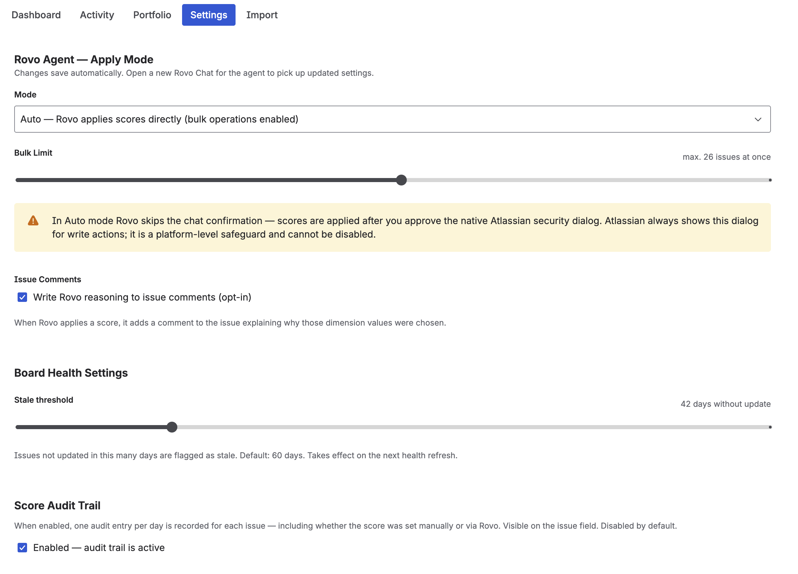
Rovo Agent — Apply Mode
Choose between Suggest, Confirm, and Auto (see Section 8 for full descriptions).
Bulk Limit
When Rovo bulk-scores a project, this slider controls the maximum number of issues scored in a single run (up to 26 at a time). Lower the limit if you want more control over each batch; raise it to process more issues in one go.
Issue Comments
Toggle "Write Rovo reasoning to issue comments" to enable or disable the automatic reasoning comments Rovo posts on issues after scoring. Useful for transparency; can be disabled if you prefer a cleaner issue history.
Board Health Settings — Stale Threshold
Set how many days without an update before an issue is considered "stale" (range: 7–180 days, default: 60). This is the global fallback threshold. Individual projects can override this value directly in the Health Criteria configuration dialog.
Score Audit Trail
When enabled, one audit entry per day is recorded for each issue — logging the score value, whether it changed, and whether it was set manually or via Rovo. The audit trail appears directly on the issue field (click "Show audit trail" to expand it).
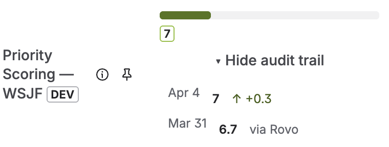
Dimension Weights
Each scoring dimension (except the denominator) can be weighted from ×1 (standard) to ×5 (five times more influence). This lets your team adjust the formula to reflect what matters most without abandoning the framework.
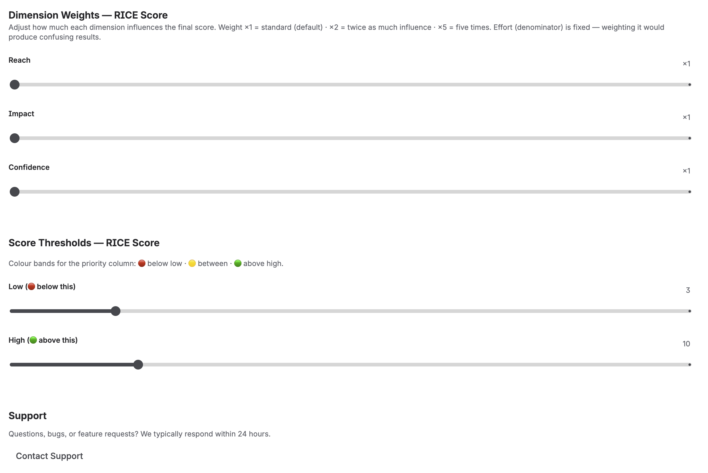
Examples of how weights can be used:
- Growth team using RICE: Set Reach ×3 — issues reaching more users are automatically ranked higher even with similar other dimensions.
- Enterprise team using WSJF: Set Business Value ×2 — revenue-critical issues get a bigger boost even when Time Criticality is moderate.
- All three ICE dimensions are weightable since ICE has no denominator.
Score Thresholds
Configure the breakpoints for the color bands in the score bar. Set the Low upper bound (issues scoring below this show red) and the High lower bound (issues scoring above this show green). Everything in between shows yellow.
10. Portfolio View
The Portfolio tab gives a single-page overview of Board Health across all Jira projects your account has access to. No need to switch projects one by one.
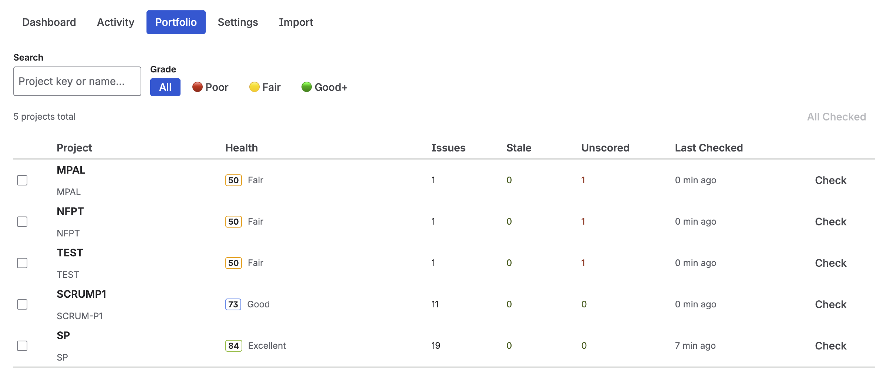
Each row shows:
- Project key and name
- Health score with a grade label (Poor / Fair / Good / Excellent)
- Issue count — total open issues analyzed
- Stale — number of stale issues
- Unscored — issues without a Priority Score
- Last checked — how long ago the health data was refreshed
Use the Grade filter to quickly surface only projects rated Poor or Fair. Click Check on any row to trigger an immediate health refresh for that project.
The search box at the top filters by project key or name — useful when you manage many projects.
11. Activity Log
The Activity tab shows a full log of every score applied via the Rovo agent — across all projects, all frameworks, and all modes. Use it to audit what Rovo has done, verify that bulk operations completed as expected, or review scoring history for a project.
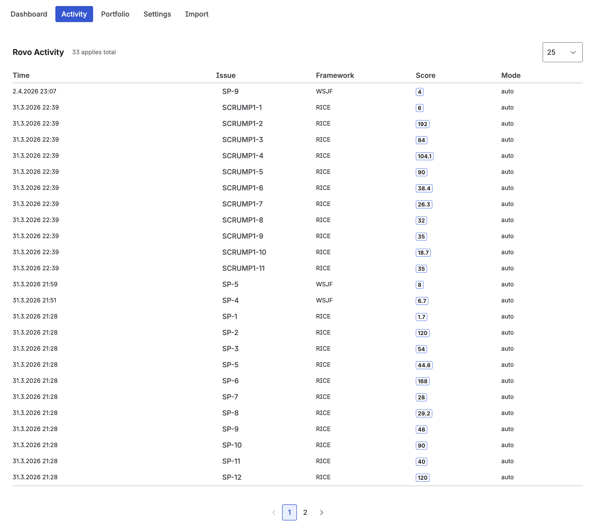
Each log entry shows:
- Time — date and time of the apply action
- Issue — the issue key (e.g. SP-6, SCRUMP1-2)
- Framework — RICE, WSJF, or ICE
- Score — the value that was applied
- Mode — whether it was applied in auto or confirm mode
The activity log is paginated (25 entries per page by default, configurable). Use it alongside the Audit Trail on individual issues for a complete picture of scoring history.
12. Import Scores from Another App
Already using a different RICE, WSJF, or ICE scoring tool? The Import tab lets you migrate existing scores into Priority Scoring automatically — without manually re-entering every value.
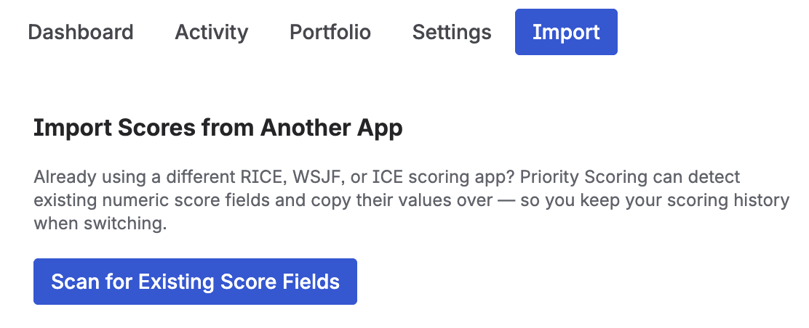
How to Import Scores
- Open the Import tab in Priority Scoring.
- Click Scan for Existing Score Fields. The app scans all custom fields in your Jira instance for fields containing "RICE", "WSJF", or "ICE" in their name that are not from Priority Scoring itself.
- Review the detected fields — the app shows the framework, field name, field ID, and import type (score-only or full).
- Select a project and click Import [Framework] Scores.
- The app copies the source values into your Priority Scoring fields. Up to 200 issues per import run.
You can also trigger an import via Rovo:
"Migrate my RICE scores from our old app to project SP" — Rovo will detect available fields, confirm the import with you, and apply the scores with a single confirmation step. Requires Confirm or Auto mode.
13. Board Health Dashboard Gadget
Priority Scoring includes a Board Health gadget that you can add to any Jira Dashboard. It shows the health score, grade, and criterion tiles for a single project — giving you at-a-glance visibility without opening the full app.
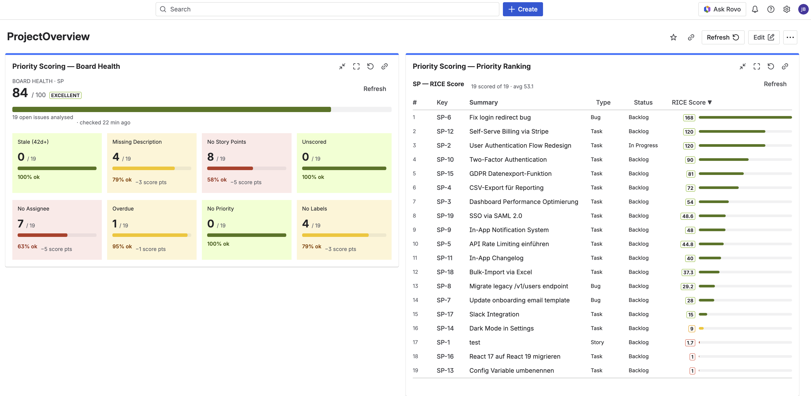
How to Add the Gadget
- Open any Jira Dashboard (from the Jira navigation → Dashboards).
- Click Edit (top right of the dashboard), then Add gadget.
- Search for Board Health or Priority Scoring.
- Click Add to place the gadget on the dashboard.
- In the gadget's configuration, select the project to monitor.
- Save — the gadget now shows live health data for that project.
14. FAQ & Troubleshooting
The score sliders don't appear on my issues.
This almost always means the field hasn't been added to the project's screen. Go to Jira Settings → Work items → Screens, find the screen for your project, and add the Priority Scoring field to it. See Step 2 — Add Fields to Screens for the full walkthrough.
Rovo applied scores but the Board Health still shows all issues as "Unscored".
This happens when the Priority Scoring field is not on the project's screen (fieldSynced: false).
Rovo can write values to the app's internal storage regardless, but the Jira custom field won't
show a value until the field is on the screen. Fix the screen setup, then click Refresh in the dashboard.
The Explain Score feature says "No score has been saved yet" but the issue shows a value.
The Explain Score feature reads dimension values from the app's internal storage (KVS), not from the Jira field value directly. If the score was set externally — via REST API or a third-party import — the dimension breakdown was never stored, so the explanation is not available. Re-score the issue via the sliders or Rovo to enable explanations going forward.
I changed the Apply Mode but Rovo is still using the old mode.
Rovo reads the mode setting at the start of a conversation and caches it for the rest of that chat. Open a new Rovo chat after changing the mode for the new setting to take effect.
In Auto mode, Rovo still shows a confirmation dialog. Is this a bug?
No. In Auto mode, Rovo skips its own in-chat confirmation prompt — but Atlassian's platform always shows a native security dialog before any write action. This is a platform-level safeguard built into Forge and cannot be disabled by the app. Simply click Confirm in that dialog.
The Board Health score doesn't update after I click Refresh.
The Refresh button triggers a fresh data fetch, but if the 1-hour cache is still valid, it returns the cached result. The cache is automatically invalidated when scores are set via the app sliders or via Rovo. For external changes, wait up to 1 hour for the cache to expire, then click Refresh again.
The "Find unscored issues" action doesn't list all my issues.
The unscored-issue search checks up to the first 50 issues (client-side filter, since Forge custom fields are not indexed in JQL). For large projects with more than 50 issues, use the Dashboard Priority Ranking table to identify unscored items — it processes up to 500 issues for the Board Health calculation.
Story Points are not recognised in the Board Health "Missing Story Points" criterion.
The app checks both customfield_10016 and customfield_10028 — the two
most common Jira field IDs for Story Points. No configuration is required. If points are still
not detected, contact support with your Jira instance URL and we can investigate.
I adjusted Dimension Weights but my scores look the same.
Existing scores are not retroactively recalculated. They update when a score is next saved on each issue — either by moving a slider or by having Rovo re-score the issue. After changing weights significantly, run a Rovo bulk re-score to update all issues at once.
Where is my data stored?
All app data — scores, configurations, audit trail — is stored in Atlassian Forge Storage within your Jira Cloud instance. No data is sent to or stored on external servers. The app runs entirely on Atlassian's infrastructure (Runs on Atlassian).
How do I uninstall the app?
Go to Jira Settings → Apps → Manage apps, find Priority Scoring, and click Uninstall. This removes all app configuration and stored data. Custom fields created during setup will remain in Jira until you delete them manually via Settings → Work items → Fields.
15. Support
Have a question, found a bug, or want to request a feature? We're happy to help.
- Email: support@janekbehrens.de
- Response time: Within 24 hours on business days.
Privacy Policy · Terms of Service · Impressum · © 2026 Janek Behrens